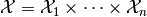
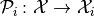
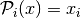
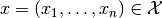
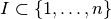
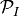
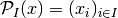

ComponentProjection¶
-
class
odl.operator.pspace_ops.ComponentProjection(space, index)[source]¶ Bases:
odl.operator.operator.OperatorProjection onto the subspace identified by an index.
For a product space , the component projection

is given by  for an element .
More generally, for an index set , the projection operator  is defined by .
Note that this is a special case of a product space operator where the “operator matrix” has only one row and contains only identity operators.
Attributes
adjointThe adjoint operator. domainSet of objects on which this operator can be evaluated. indexIndex of the subspace. inverseReturn the operator inverse. is_functionalTrueif this operator’s range is aField.is_linearTrueif this operator is linear.rangeSet in which the result of an evaluation of this operator lies. Methods
__call__(x[, out])Return self(x[, out, **kwargs]).__eq__($self, value, /)Return self==value. _call(x[, out])Project xonto the subspace.derivative(point)Return the operator derivative at point.